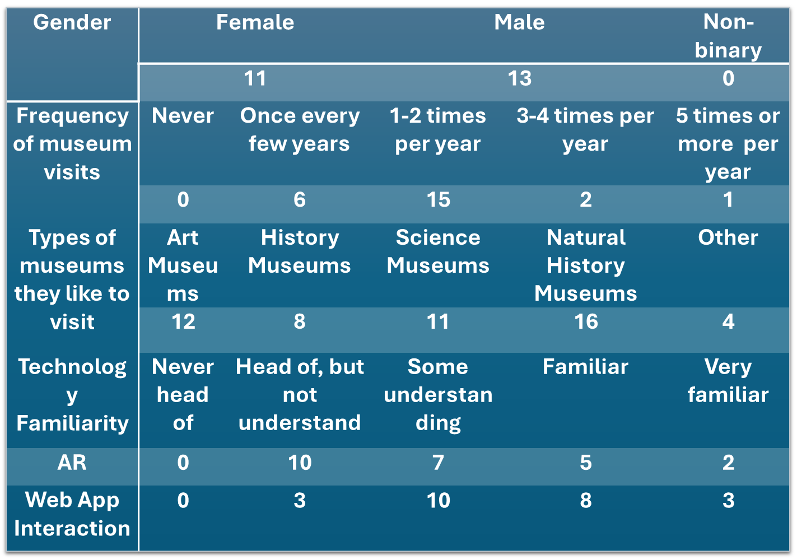
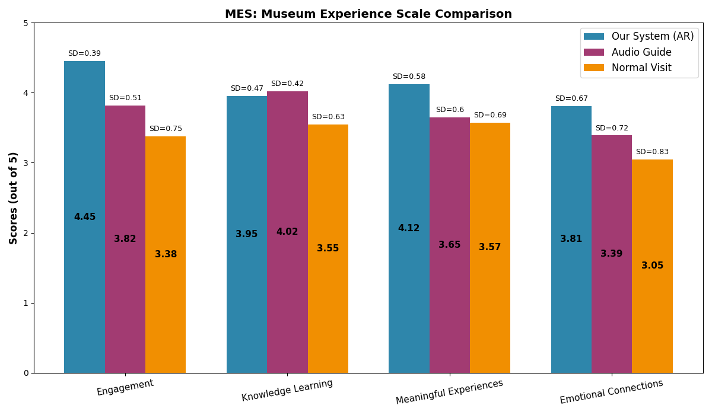
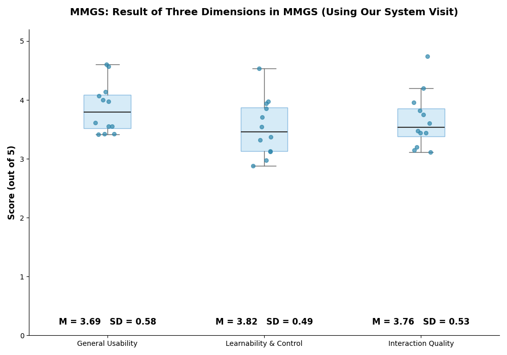
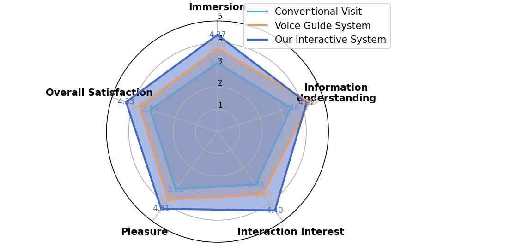
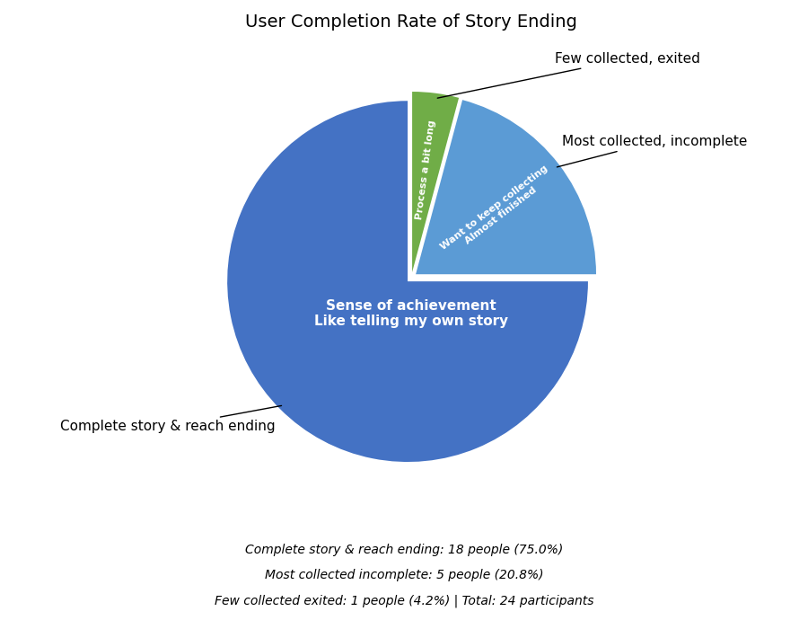
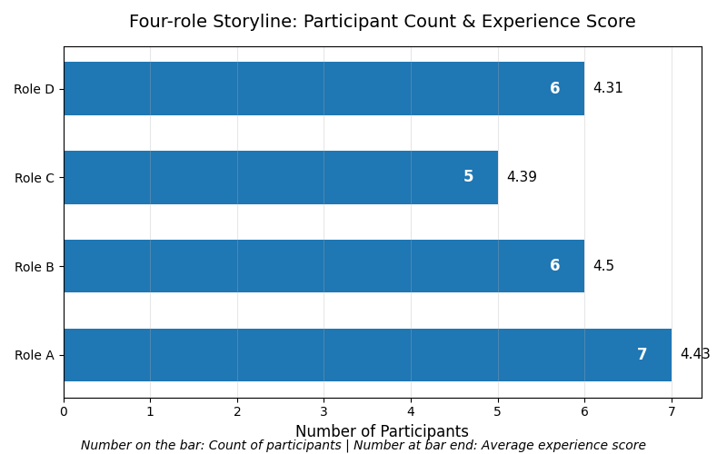

To evaluate the usability, immersion, and storytelling experience of the Museum Tales Web prototype, we invited 24 participants to take part in user testing. The purpose of the testing was not simply to check whether the website could run successfully, but to observe whether users could understand the complete experience flow, including role selection, the Mission Hub, exhibit scanning, NPC dialogue, clue collection, story reconstruction, ending unlocking, and the Profile / Ranking page. At the same time, we also wanted to understand whether this Web-based interactive experience could encourage users to participate in the story more actively compared with a regular museum visit.
Testing Method

Before the testing started, participants first read the information sheet, signed the consent form, and provided basic demographic details. Among the participants, there were 11 female participants and 13 male participants, with no non-binary participants. Most participants had some museum visiting experience. Specifically, 15 participants visited museums 1–2 times per year, 6 participants visited museums once every few years, and a smaller number visited museums more than three times per year. This suggests that the participants were not completely unfamiliar with museum experiences and were able to compare traditional museum visits with the Web-based interactive experience.
In terms of technology familiarity, participants were generally more familiar with Web app interaction than AR. For AR, 10 participants had heard of it but did not really understand it, 7 had some understanding, 5 were familiar with it, and 2 were very familiar with it. In comparison, more participants showed a medium or high level of familiarity with Web app interaction. This indicates that our user group was relatively comfortable with web-based interaction, but their understanding of AR scanning and augmented reality still varied. Therefore, the testing also helped us observe whether users with lower AR familiarity could understand the scanning and clue-triggering mechanism smoothly.
The testing adopted a grouped and comparative structure. The 24 participants were divided into two groups, with 12 participants in each group. Group 1 first experienced a regular museum visit and then used the Web App. Group 2 first used the Web App and then experienced a regular museum visit. After each stage, participants completed a questionnaire. This design helped reduce the influence of experience order on the results and allowed us to compare the Web prototype and traditional museum visiting experience more clearly.
During the Web prototype testing, participants were asked to complete the following main tasks:
Choose a role → Enter the Mission Hub → Scan exhibits or simulated exhibit pages → Collect clues → Talk to NPCs → Reconstruct the story → Unlock the ending → Check Profile / Ranking
During the testing process, we observed whether users knew what to do next, whether they understood the relationship between scanning, clues, and NPC dialogue, and whether they could successfully complete the story ending. We also recorded their feedback on usability, immersion, storytelling, visual design, and the overall experience.
To support the evaluation more systematically, we used several questionnaire-based measures, including MES, MMGS, and SUS. MES was used to compare the museum experience across three conditions: our interactive system, an audio guide system, and a normal museum visit. MMGS was used to evaluate the digital and mobile museum guidance experience of our system, including usability, learnability, control, and interaction quality. SUS was used to measure the overall usability of the Web prototype.
The SUS score of Museum Tales was 73.4, suggesting that the prototype reached an acceptable and generally positive usability level, while still leaving space for improvement in guidance, AR feedback, and interaction clarity.
Evaluation Results

The MES results showed that Museum Tales performed strongly in several museum experience dimensions. In terms of engagement, our system received the highest score, with a mean score of 4.45, compared with 3.82 for the audio guide and 3.38 for the normal visit. This suggests that the role-based and interactive story structure helped users become more actively involved in the museum experience.
For knowledge learning, the audio guide received a slightly higher score (4.02) than our system (3.95), while the normal visit scored 3.55. This result is understandable because audio guides are usually designed to deliver structured information clearly and directly. However, our system still performed close to the audio guide while also providing stronger interaction and narrative engagement.
For meaningful experiences, our system scored 4.12, higher than the audio guide (3.65) and the normal visit (3.57). This indicates that users did not only find the system entertaining, but also felt that the story, clues, and role-based exploration helped them connect with the museum content in a more meaningful way.
For emotional connections, our system also scored the highest, with a mean score of 3.81, compared with 3.39 for the audio guide and 3.05 for the normal visit. This shows that the interactive storytelling structure helped users form a stronger emotional connection with the museum experience than passive reading or listening.

The MMGS results further supported the usability and interaction quality of our system. The system received a mean score of 3.69 for general usability, 3.82 for learnability and control, and 3.76 for interaction quality. These results suggest that most participants were able to understand and use the Web prototype, although there was still room to improve guidance and reduce confusion in some interaction stages.
The SUS score of the system was 73.4, which indicates an acceptable and generally positive level of usability. This result suggests that users could complete the main tasks and navigate the prototype successfully, but the system was not yet perfect. The score also reflects what we observed during testing: the core flow worked, but some parts, such as AR scanning feedback, task guidance, and the connection between clues and NPC dialogue, still needed to be clearer.
The comparison between the three experience types also showed that our interactive system performed well in immersion, interaction interest, pleasure, and overall satisfaction. Compared with the conventional visit and the voice guide system, Museum Tales created a more active and game-like museum experience. Users were not only receiving information, but also making choices, collecting clues, talking to characters, and completing the story.

Positive Feedback
Overall, users responded positively to the story-based experience of Museum Tales. Many participants felt that role selection gave them a clearer identity and purpose before entering the experience. They were no longer just ordinary visitors, but explored the exhibits from the perspective of a specific role. This made the museum visit feel more like a task-driven story experience rather than simply browsing exhibit information.
NPC dialogue was also one of the parts that received positive feedback. Compared with reading explanatory text in a traditional museum, NPC dialogue made users feel that they were interacting with characters in the story. Some users felt that this made the exhibit information easier to understand and made the visiting experience more contextual. Especially when clues were connected with NPC dialogue, users felt that they were gradually getting closer to the truth of the story instead of passively receiving information.
The clue collection mechanism also strengthened users’ sense of progress. Users could see which clues or keywords they had already collected, which helped them better understand where they were in the story. According to the testing results, 18 participants successfully completed the story and reached the ending, accounting for 75% of all participants. This shows that most users were able to understand the main flow of the system and complete the full experience from exploration to ending.

In terms of completion status, 5 participants collected most of the clues but did not complete the final ending, accounting for 20.8%. Although these users did not fully complete the story, they were usually close to the ending and showed a willingness to continue collecting clues and finishing the task. Only 1 participant exited early, accounting for 4.2%. This suggests that the overall flow was achievable for most users, although a small number of users still dropped out because the process felt slightly long or the guidance was not clear enough.

For the role experience, the number of participants across the four roles was relatively balanced. Role A had 7 participants, with an average experience score of 4.43; Role B had 6 participants, with an average score of 4.50; Role C had 5 participants, with an average score of 4.39; and Role D had 6 participants, with an average score of 4.31. Overall, all scores remained at a relatively high level, suggesting that there was no major imbalance in the experience across different roles. Role B received the highest average score, which may indicate that its storyline or task design was more engaging for users. However, Role D received a slightly lower score, which suggests that the story appeal and task clarity of different roles could be further improved in future iterations.
The ending and leaderboard also made the experience feel more complete. After completing the story, users could view their ending, score, level, and ranking. This gave the whole experience a clear closing point. Compared with a regular museum visit, where users often leave without direct feedback, the ending page of Museum Tales gave users a sense of completion and achievement. It also increased their motivation to replay the experience or try another role.
Problems Found
Although the overall feedback was positive, the testing also revealed several issues.
First, some users were initially unclear about the relationship between scanning, clues, and NPC dialogue. They understood that they needed to scan exhibits and that they could talk to NPCs, but they did not immediately understand that “the clues obtained through scanning would affect NPC dialogue and story reconstruction.” This shows that although the system had a complete logic, the relationship between different actions still needed clearer guidance for first-time users.
Second, some users expected the scanning function to feel closer to a real AR camera interaction. Although the current prototype already demonstrated the connection between exhibits and digital content through MindAR or simulated scanning, some users still wanted to see clearer camera recognition feedback, such as a successful scanning animation, a recognition frame, AR content appearing on screen, or a stronger sense of spatial interaction. This indicates that the current version was able to prove the functional logic, but the AR immersion could still be improved.
Third, a small number of users felt that the process was slightly long. To complete the story, users needed to go through role selection, the task page, scanning, clue collection, NPC dialogue, and story reconstruction. For users who enjoy exploration, this process increased engagement. However, for users with less patience or lower technology familiarity, the process could feel slightly complex. This also explains why 5 users were close to completing the experience but did not reach the final ending, and why 1 user exited early.
Fourth, some pages still needed clearer visual guidance. In particular, on the Mission Hub and NPC pages, users sometimes had to pause and judge where they should click next, or whether their current clues were enough to enter the next stage. This shows that although the interface was clearer than the early version, task status, button prompts, and progress feedback still needed to be strengthened.
Finally, users with lower AR familiarity needed simpler instructions. Since many participants had only heard of AR but did not really understand how it worked, some of them could feel confused if the system entered scanning or clue-triggering too directly. Future versions should include more intuitive guidance on the scanning page to reduce the learning cost for first-time users.
Improvements
Based on the user testing results, we summarised several directions for further improvement.
First, the Mission Hub needs to provide stronger task guidance. It should not only display the current role, clues, and activity records, but also clearly tell users “what to do next.” For example, more visible task status, a progress indicator, and a next-action button could be added to help users quickly understand their current stage.
Second, clue feedback needs to be more obvious. After users scan an exhibit, the system should clearly show “what clue has been obtained,” “what this clue can be used for,” and “whether the conditions for entering story reconstruction have been met.” This would reduce users’ confusion about the relationship between scanning and NPC logic.
Third, the NPC page can be further improved. NPC states could be made clearer, such as showing labels like “available conversation,” “need more clues,” or “new clue unlocked.” This would help users understand more directly why some conversations can move the story forward while others cannot yet trigger key content.
Fourth, the Ending page should continue to display and strengthen the explanation of clue sources. The testing showed that users liked seeing their results and completion status. Therefore, the ending page should not only show the score and level, but also explain why users received that ending and which exhibit clues and NPC dialogues influenced the final result. This can strengthen the story closure and make users feel that their actions were meaningful.
Finally, AR scanning needs to feel more realistic. In the future, clearer camera-based recognition feedback could be added, such as a scanning frame, successful recognition prompt, floating keyword animation, or AR overlay. This would help users better understand the connection between real exhibits and the digital story.
Summary
Overall, the user testing showed that the core experience of Museum Tales is feasible. Most users were able to complete the full flow from role selection to ending unlocking, and they felt that role-playing, NPC dialogue, clue collection, and the leaderboard made the museum visit more active and story-driven. According to the testing data, 75% of users successfully completed the story and reached the ending, and the average experience scores of all four roles remained relatively high. This suggests that the system has good overall usability and appeal.
At the same time, the testing reminded us that a Web AR storytelling experience should not only focus on whether functions exist, but also on whether users can clearly understand the meaning of each step. Future improvements should focus on task guidance, clue feedback, NPC status prompts, and the realism of AR scanning. Through these improvements, Museum Tales can further develop from a working Web prototype into a more mature interactive storytelling experience suitable for real museum contexts.